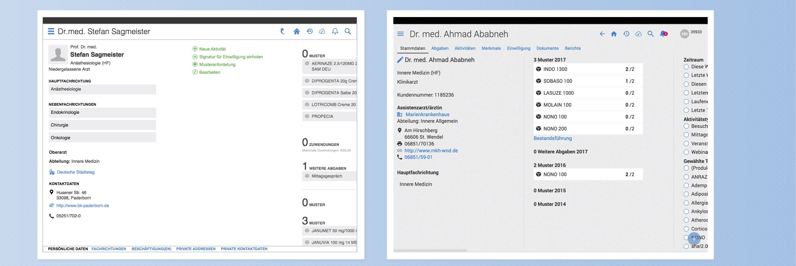

Project Type
Full redesign of a SaaS pharmaceutical marketing app
Role
Lead Design, research, concept, salesperson (to the company and to our customers)
Project Duration
4 Months part time - 2 months full time
ysura is the best… can it get better?
What is ysura?
ysura is a Munich based marketing technology company focused on the pharmaceutical industry. Over 1000 employees from the biggest pharmaceutical companies in Germany use ysura’s main product ysura CRM.
The main use of ysura is to access and understand customer information for marketing and information purposes as well as for reporting marketing and informative activities made towards doctors and other healthcare professionals. Additionally, it helps drive internal processes to ensure compliance and best industry practices of their sales staff.
During my first 2 years working in ysura, I was designing features based on an existing design language and interaction guidelines. At the same time I was trying to understand the pharmaceutical industry, its employees as software users and the processes through which the companies drive their business.
Feature growth was fast and new requirements were arriving at a blazing speed. The app needed to support new communication channels and more complicated processes. This expansion in the features lead to a considerable growth in the app and its related services.
As the functionality of the app doubled, its complexity also became considerably higher. This lead to a slight reduction our customers happiness with the product and drove us to start finding a solution.
The old design was not capable of adequately support so many new features without compromising on usability. Besides this, very short schedules for delivery made quality control and impact analysis on the design side difficult to make.
After this period of growth, a change was needed to bring the overall quality of the product up while enabling it to support new ideas, visualizations and form factors.

Challenges
Some aspects of the redesign had to be reworked or scrapped because of development issues.
While developers were consulted and brought into discussions since the beginning of the project, many details were discussed late and while the project was already underway, leading to more changes and the need of more “quick tweaks”.
Results
-
Reactions to the new design have been extremely positive both from existing and prospective customers.
-
Implementation was done in record time (approximately 1 month) thanks to well planned steps, great documentation and great developers.
-
Training times for users were reduced thanks to the clearer design and the new consistent patterns introduced.
- Time to deliver design for new features halved because of the consistent reuse of components.
- Miscommunication with developers has been reduced greatly as now we share stronger standards and conventions for components.
- Support calls have been reduced significantly since the redesign was launched
Deliverables and areas of daily work
- Concept design
- Planning
- Visual design
- Market and competition research
- User research
- Prototyping
- Wireframing
- High fidelity mockups
- Sales and pitching
Thanks for reading